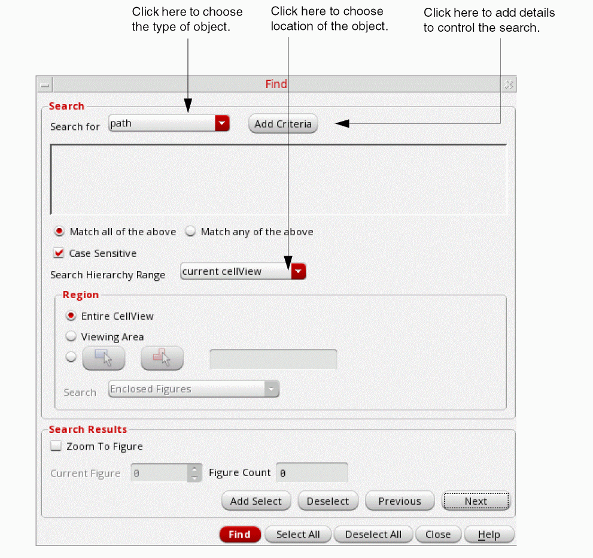
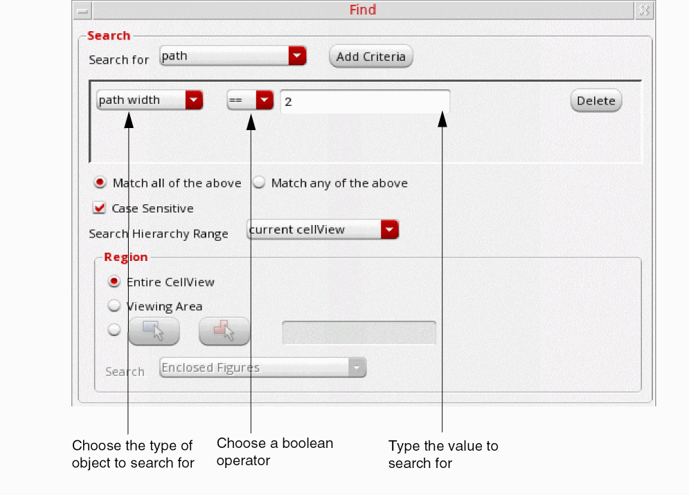

4
Using Design Tools
This chapter contains these topics:
Using Find
The Find command lets you search for objects with specific attributes or property values. See the Objects Criteria Table for a list of conditions and logic to use when searching for objects.
| Support for Objects | |
|
You can search for ROD names on labels, paths, polygons, rectangles, any shape and text display objects. |
|
This topic covers the following:
Specifying the Search Criteria
In the text field where you specify the search text, you can make a text entry or choose from a cyclic field, depending on the type of value you want to search for.
To search for multiple objects, you can use * and . wild card characters. The character * searches for the entry you made, with any number of unspecified characters before, after, and/or between any characters in your entry. The character . searches for the entry you made, with any single unspecified character at any position in your entry. For example, to search for all instances that have PInst at the beginning of their names, type “PInst*“. However, if you want to search for all instances that have Inst in their names irrespective of the first character, type “.Inst*“.
PInst1 and PInst2 out of all the instances that have PInst at the beginning of their names, specifying the search criterion as one of the following does not give the desired results:Finding Objects
-
Choose Tools – Find [
Shift-s].
The Find Form appears. - In the Search for cyclic field, choose the type of object you want to find, and the location in which you want to search in the Search Hierarchy Range field.
-
Click Add Criteria to add Boolean expressions, which control the search (search criteria).
. -
Set the search criteria by doing the following:
- Click the first field to choose the type of value to search for.
- Click the Boolean operator field to choose the operator you want: equal (==) or not equal (!=), and other operators depending upon the criteria you select.
-
Type or choose the value you want. (see Specifying the Search Criteria)

-
Click Apply.
Layout Viewer highlights all of the objects it finds matching the specified search criteria and puts them in a search group. The first or current object in the group is highlighted in a different color. - Click Previous or Next to search through the group.
- Click Add Select to select the current object in the search group.
- Click Select All to select all of the highlighted objects.
- When you are finished selecting objects, click Close.
Finding Objects in Instances
To search for objects or instances inside other instances,
-
Choose Tools – Find [
Shift-s].
The Find Form appears. - In the Search for cyclic field choose the type of object you want to find.
- Click Add Criteria to further define the search.
- Specify the Search Hierarchy Range.
-
Click Apply.
During the search, instances are highlighted as they are found.
Finding Instances
To search for instances in the current cellview,
-
Choose Tools – Find [
Shift-s].
The Find Form appears. - In the Search for cyclic field, choose inst.
- Click Add Criteria to add search criteria.
- Click the first field in the criterion line to search for the instance by one of the following:
- Type the cell or instance name. (see Specifying the Search Criteria)
- Click Add Criteria to further define the search.
-
Click Apply.
Layout Viewer highlights all the instances in the cellview that match the criteria you entered.
Using Rulers
The Create Measurement command lets you create rulers to measure objects and distances between objects in a cellview.
This topic covers the following:
Creating Rulers
The Create Measurement command creates a ruler object, which lets you measure objects or the distance between objects. You can also use the command to measure distances between two edges or vertices.
You can create transient or persistent rulers in Layout Viewer. A transient ruler cannot be saved. However, a persistent ruler can be saved. By default, persistent rulers are created in Layout Viewer. If you want to create transient rulers, deselect Create Measurement as a savable object option on the General tab of the Create Measurement form. To open the Create Measurement Form, choose Tools – Create Measurement, or press k and then press F3.
The Create Measurement command has the following three modes:
Single-segment
Single-segment is the default measurement mode for the Create Measurement command. In this mode, when you add two points on the canvas, the corresponding measurement is displayed on the canvas. If the Repeat Commands is on, the Create Measurement command continues, else the command completes.
By default, the placement of the measurement is calculated automatically. You can view the placement when you drag the pointer. You have the flexibility to specify the location of the measurement segment, either before adding the second point or after adding the second point.
If you want to specify the location of the measurement segment before the second point is added on the canvas, move the pointer to the desired location, and then press Ctrl and click the middle mouse button. The location of the measurement segment is now fixed. You can then select the second point. If you have selected multi-segment measurement mode, the multi-segment measurement segment is drawn at the location where you press Ctrl and click the middle mouse button.
If you want to specify the location of the measurement segment after the second point is added on the canvas, press Ctrl and click. When you move the pointer, the measurement segment will also move. Click to fix the location of the measurement segment. The Create Measurement command now completes.
Edge
The edge measurement mode allows you to click an edge of an object and a measurement is drawn with the two vertices as the two ends. The vertex of the edge closest to the point where you click is considered as the first vertex, and the other edge is considered as the second vertex. When you move the pointer on the canvas, the measurement also moves. You then click the canvas to place the measurement at the desired location. The first click lets you select the edge and the second click lets you place the measurement on the canvas. A double-click lets you create and place the edge measurement at the edge itself.
The edge measurement mode allows you to measure the width of an edge of an object. The first click lets you select the edge and the second click lets you place the measurement on the canvas. A double-click lets you create and place the edge measurement at the edge itself. When pointer snaps to a vertex, the edges connected to the vertex get measured.
Multiple
There are two ways in which you can create multi-segment measurements:
-
Click Multi-segment Ruler on the General tab of the Create Measurement form. In the multi-segment mode, a segment is added to the ruler, with every click the canvas. If you double-click or press
Enter, the last point is added to the ruler and the Create Measurement command completes. -
You can also create multi-segment measurement while you are in the single-segment measurement mode. In the single-segment mode, after the first click, press
Shiftand then click to add a point to the measurement. PressShiftand click to add subsequent points to the measurement. If you click or pressEnter, the last point is added to the ruler and the Create Measurement command completes.
Similar to single-segment mode, in multi-segment mode you can place the measurement segment by using the Ctrl and click combination.
The table below summarizes the mouse/key bindings that are in effect during the Create Measurement command for the three measurement modes, single-segment, edge, and multi-segment:
Saving Rulers
By default, rulers are saved when you save the cellview. If you do not want to save the rulers, ensure that the Savable Measurement option on the Create Measurement form is not selected.
Deleting Rulers
You can clear all rulers from the design window by selecting Tools – Clear All Measurements. This will delete all persistent and transient rulers.
Return to top